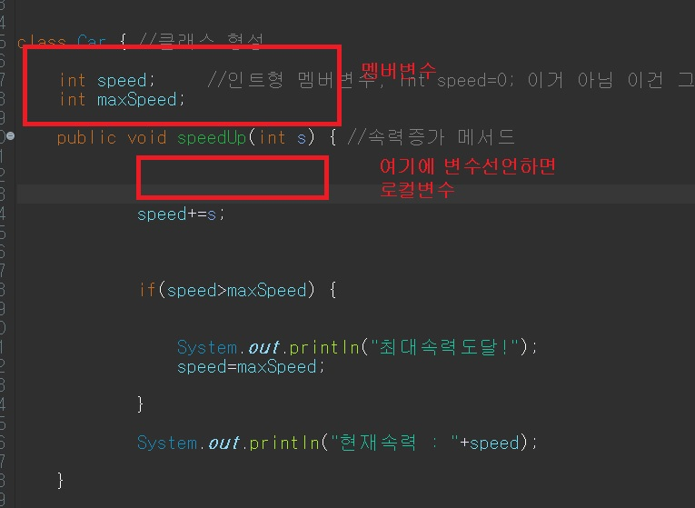

Ex)
1) 자동차 클래스 정의
자동차(Car) 클래스 정의
- 멤버변수
1) 현재속력(speed, 정수형)
2) 최대속력(maxSpeed, 정수형)
- 메서드
1) 속력 증가 : speedUp()
- 파라미터로 증가할 속력(s) 전달, 리턴값 없음
- 증가할 속력(s)을 전달받아 현재속력(speed)에 누적 및 현재속력을 출력
단, 누적된 속력이 최대 속력(maxSpeed) 보다 클 경우
현재 속력(speed)을 최대 속력(maxSpeed)으로 고정 후 "최대 속력 도달!" 출력
2) 속력 감소 : speedDown()
- 파라미터로 감소할 속력(s) 전달, 리턴값 없음
- 증가할 속력(s)을 전달받아 현재속력(speed)에서 차감 및 현재속력을 출력
단, 차감된 속력이 0 보다 작을 경우
현재 속력(speed)을 0 으로 고정 후 "차량 정지!" 출력
2) 본문
// Car 클래스 인스턴스 생성
Car car = new Car();
car.maxSpeed = 200;
System.out.println("현재속력 : " + car.speed + "km/h, 최대속력 : " + car.maxSpeed + "km/h");
car.speedUp(50);
car.speedUp(250); // 최대속력이 200km/h 이므로, 300 이 아닌 200으로 고정됨
car.speedUp(50); // 최대속력이 200km/h 이므로, 250 이 아닌 200으로 고정됨
car.speedDown(100);
car.speedDown(200);
class Car {
int speed; // 현재 속력
int maxSpeed; // 최대 속력
// 속력 증가
public void speedUp(int s) {
// 전달받은 속력을 현재속력에 누적
speed += s;
// 최대 속력 도달 여부 판별
if(speed >= maxSpeed) {
System.out.println("최대속력 도달!");
speed = maxSpeed; // 현재속력을 최대속력으로 고정
}
System.out.println("현재속력 : " + speed + "km/h");
}
// 속력 감소
public void speedDown(int s) {
// 전달받은 속력만큼 현재속력에서 차감
speed -= s;
// 최저 속력(0) 도달 여부 판별
if(speed <= 0) {
System.out.println("차량 정지!");
speed = 0; // 현재속력을 0으로 고정
}
System.out.println("현재속력 : " + speed + "km/h");
#구조화 요약
1. 변수선언위치분류
-멤버변수: 클래스 내에서 이용 -인스턴스
-클래스
-로컬변수: 매서드 내에서 이용 -로컬
-파라미터
2. 주의점
- 기본적으로 변수는 초기화를 해줘야 한다.
-

Ex2) 본문
1) 변수선언 위치에 따른 분류
멤버변수 : 클래스 내부, 메서드 외부에 선언된 변수. 클래스 내에서 접근 가능
- 인스턴스 멤버 변수 : static 키워드가 없는 멤버변수
- 클래스 멤버 변수 : static 키워드가 있는 멤버변수
로컬변수 : 메서드 내부에 선언된 변수. 해당 메서드 내에서만 접근 가능
- 로컬 변수 : 메서드 내에서 선언된 변수
- 파라미터 변수 : 메서드 선언부 파라미터 부분에 선언된 변수
2) 변수 선언 다음 호출 할 수 있다.
- 기본적으로 변수는 선언다음 초기화가 필요하다.
- JAVA 는 문제가 생길여지가 있으면 안됨, 안정적임.
동작을 한다면 ,최소한 크게 문제는 없다.
- 그러면 현대에 맞지 않는 것 아닐까, 빠르게빠르게 되어야하는데,, 린스타트업엔
맞지 않는다 해야하나?
- for(안의 int i) 같이 안의 변수 i 는 for 문 { } 안에서만 사용
int instanceVariable; // 인스턴스 변수(VariableTypes 클래스 내에서 접근 가능)
static int classVariable; // 클래스 변수(VariableTypes 클래스 내에서 접근 가능)
public void m1(int parameterVariable) { // 파라미터 변수(m1() 메서드 내에서 접근 가능)
System.out.println(localVariable); // 로컬 변수 선언 전이므로 사용 불가
int localVariable = 10; // 로컬 변수(현재 위치부터 m1() 메서드 내에서 접근 가능)
int localVariable2; // 로컬 변수(현재 위치부터 m1() 메서드 내에서 접근 가능)
System.out.println(localVariable);
System.out.println(localVariable2); // 초기화 되지 않은 로컬 변수는 사용 불가
System.out.println(instanceVariable); // 초기화하지 않아도 인스턴스 변수 접근 가능
for(int i = 0; i < 10; i++) { // 로컬 변수(for문 내에서만 사용 가능)
System.out.println(i);
}
System.out.println(i); // for문 종료 후 로컬변수 i는 제거되므로 접근 불가
System.out.println(localVariable); // for문 종료 후에도 계속 유지됨
} // m1() 메서드 끝
public void m2() {
// m1() 메서드와 다른 m2() 메서드 내에서는
// m1() 메서드에서 선언된 로컬 변수는 존재하지 않으므로 접근이 불가능하며
// 멤버변수(클래스 변수 또는 인스턴스 변수)에만 접근이 가능하다!
System.out.println(localVariable); // 존재하지 않는 변수이므로 접근 불가
System.out.println(instanceVariable); // 인스턴스 변수 접근 가능